Первородные Силы
Деревня Стоунтоп (Stonetop) стоит на древних руинах, возведённых века или даже тысячелетия назад Создателями Создатели. Но в мире есть то, что было старым, когда Создатели были молоды. И есть то, что ещё старше — старше самого мира, больше мира. Странное и чуждое. Первородные существа и первородные силы, с самой зари времён.
Темы
Выбери или брось 1 раз либо 2 раза и совмести.
| 1 | Безбрежность, необъятность, непостижимость, первородная пустота |
|---|---|
| 2 | Истина, чистота, квинтэссенция, сырая материя творения |
| 3 | Фундаментальные силы: порядок, хаос, время, пространство, тяготение, свет, смерть и т. д. |
| 4 | Мир духов: сознание, символы и мысль, связь всего сущего |
| 5 | Истинные имена, слова силы, речь, превосходящая язык |
| 6 | Небесные тела: их движение, их тайны, их влияние на мир |
| 7 | Парадокс: судьба и свобода воли, причинные петли, бесконечность, взаимоисключающие истины |
| 8 | Силы природы и формирование мира: медленные и незаметные, яростные и катастрофические |
| 9 | Заточение Тех, Что Внизу (Things Below, Те, Что Внизу) |
| 10 | Мифические времена и мифические деяния, рождение и смерть богов и легенд |
| 11 | Давно забытые народы и существа, жившие до возвышения Создателей |
| 12 | Порталы, возможности, иные миры, существа и вещи вне времени и пространства |
Зацепки
- Приближается великое соединение звёзд, предвещающее судьбоносные перемены.
- Неподалёку от Стоунтопа падает метеорит.
- Учёный возвращается от древнего памятника и проповедует бессмыслицу, заражающую умы других.
- Ритуал можно совершить только в месте первородной силы.
- Века назад дух Войны отрёкся от своей роли и обязанностей и воплотился нелюдимым пастухом, чтобы жить простой жизнью.
- Спящий титан — огромный, как гора, покрытый тысячелетними наслоениями почвы, обломков и зелени, — начинает шевелиться.
- Из портала под Разрушенной Башней (Ruined Tower, Разрушенная Башня) выходит клан беженцев из неведомых краёв.
Вопросы
- Бледный Охотник (Pale Hunter, Бледный Охотник) связан с Луной, но есть ли другие луны? С чем связаны они?
- Что обычно заставляет тебя чувствовать себя ничтожным и маленьким?
- Веришь ли ты в судьбу? Или мы сами прокладываем свой путь?
- В каком странном месте ты однажды побывал, где явно чувствовалось прикосновение древних, потусторонних сил?
Космология
Многие стороны космологии мира намеренно оставлены расплывчатыми, чтобы ты и твоя группа прорабатывали их по мере надобности. Вот о чём стоит спросить или подумать:
- Насколько мифичен ваш космос? Скажем, солнце — это звезда, вокруг которой вращается мир? Или по небу правит свою колесницу Гелиор (Helior, Гелиор, Приносящий День)? Или что-то ещё?
- Плавают ли в пустоте другие миры? Можно ли добраться до них через мир духов или порталы порталы?
- Что лежит за Последней Дверью (Last Door, Смерть и Неумирающие)? Одинакова ли загробная жизнь для всех, или каждую душу ждёт своя участь?
- Каковы в точности отношения между Первыми Творцами, великими духами, богами забытых народов и богами, которым поклоняются сегодня?
- Развивалась ли жизнь на протяжении эпох? Или Первые Творцы населили мир большей частью знакомых нам растений и животных? Или что-то ещё?
- Откуда взялось человечество? Мы старше Создателей или созданы ими?
Ответы на эти вопросы будут зависеть от того, как твои игроки ответят на вопросы о других темах, и от решений, которые ты о них примешь. В частности, см. Аратис Аратис, Хранительница Закона, Дану Дану, Мать-Земля, Гелиор Гелиор, Приносящий День, Тор Тор, Дождетворец, боги и религия Боги и религия, смерть и Неумирающие Смерть и Неумирающие, Создатели Создатели, Лигос и Юг Лигос и Юг и сам Стоунтоп Деревня Стоунтоп.
Первые Творцы
Они были первыми разумами, познавшими себя, первыми существами, давшими себе имена. Они родились из космической пустоты, из света и возможности, из бурлящего хаоса ничего и всего. Они изрекли реальность в бытие и установили её основные законы. Они сотворили мир и заточили Тех, Что Внизу Те, Что Внизу.
Первые Творцы вряд ли появятся в вашей игре напрямую. В основном они служат фоном, объяснением того, почему всё устроено так, как устроено. Некоторые, возможно, задержались в мире как те, кого мы теперь зовём богами Боги и религия, но, как правило, они больше не формируют мир деятельно.
Возможно, они вовсе о нём забыли.
Те, Что Внизу
Существа тьмы, хаоса и скверны, старше даже Первых Творцов. Они завистливы, полны ненависти и бесконечной злобы, и потому Первые Творцы заточили их в глубинах земли.
Хотя они и в заточении, они всё ещё влияют на мир. Зелёные Владыки (Green Lords, Зелёные Владыки) воззвали к ним, когда восстали фейри (Fae, Фейри). Слуги Владык Камня (Stone Lords, Владыки Камня) поддались их шёпоту и навлекли Время Катаклизма Те, Что Внизу. Строители Курганов (Barrow Builders, Строители Курганов) открыто заискивали перед ними и почитали их как богов. В нынешнюю эпоху Те, Что Внизу их влияние ослабло, но всё ещё ощущается.
Великие духи
Невообразимо могущественные сущности, божественные и величественные. Первые Творцы создали одних как опыт, других — как спутников, третьих — как хранителей мира. Иные великие духи возникли сами собой, рождённые космосом или верой смертных существ.
Многие из этих великих духов отчуждённы, чужды и равнодушны к миру (по крайней мере, к этому миру). Другие деятельны, но формируют мир незаметно. К ним вполне могут относиться Госпожа Ворон (Lady of Crows, Смерть и Неумирающие) и некоторые или все великие боги Боги и религия.
Чтобы создать великого духа для своей игры, реши, поклоняются ли ему как богу.
Если да, создай его по правилам для других богов Боги и религия. Если нет, выбери или брось 2 первородные темы и представь сущность, на которую наводит их сочетание. Подумай, почему ему не поклоняются: он неизвестен, безразличен, чужд или что-то ещё?
Если один из великих духов станет в вашей игре деятельным, распиши его как угрозу (магическую сущность). Даже благожелательные существа такой космической мощи не могут не создавать неприятностей.
Воплощения
Великие духи порой являются в мир напрямую. Такие воплощения, скорее всего, становятся фигурами мифов и легенд. Примеры:
- Ивовые Ведьмы (Willow Witches, Топь Ферриера)
- Девятипалый незнакомец Тор, Дождетворец, если считать Тора великим духом
- Бледный Охотник Бледный Охотник, если ты решишь, что он первородная сущность. Чтобы создать воплощение, сначала определи, проявлением какого великого духа оно является.
Затем выбери или брось, почему оно воплотилось, каково его проявление и 1-3 ограничения.
Распиши его как чудовище, а возможно, и как угрозу, со всевозможными могущественными ходами — такие существа не связаны обычными законами реальности. Вдохновение ищи в примерах (предыдущая колонка).
Будь осторожен, вводя воплощения в игру. Они должны делать мир богатым и таинственным и помогать тебе наполнять жизнь персонажей игроков приключениями; они не должны затмевать персонажей или служить удобной натяжкой. Их участие всегда должно казаться опасным, тревожным и запутанным.
| 1-2 | В наказание/во искупление/ради бегства |
|---|---|
| 3-4 | Его призвала мощная магия |
| 5-6 | Ради достижения некой цели |
| 7-8 | Из любопытства/скуки/отчаяния |
| 9-10 | По воле судьбы или космической случайности |
| 11-12 | Чтобы учиться, познавать мир |
| 1-2 | С виду обычный человек |
|---|---|
| 3-4 | С виду обычный зверь |
| 5-6 | Дух или иное таинственное существо |
| 7-8 | Явно сверхъестественный человек |
| 9-10 | Чудовище или сверхъестественный зверь, возможно, титан |
| 11-12 | Брось ещё раз, но оно является группой или множеством того, что выпало |
| 1 | Не осознаёт, что оно такое |
|---|---|
| 2 | Подчиняется другому |
| 3-4 | Имеет привязь |
| 5-7 | Связано определёнными нерушимыми правилами |
| 8 | Может воплощаться лишь ненадолго, в определённых обстоятельствах или в определённое время |
| 9 | Подвержено смертным желаниям/нуждам/ чувствам/слабостям |
| 10 | Отказывается вмешиваться |
| 11 | На него охотятся другие сверхъестественные существа |
| 12 | Не может использовать свою силу без страшных последствий для себя или мира |
Персонажи игроков обыскивают недра Разрушенной Башни Разрушенная Башня в поисках бронзового шлема, служащего оболочкой для Самоцвета Разума Самоцвет Разума. На следующей сессии они, скорее всего, найдут каменный мешок Разрушенная Башня, и я, повинуясь прихоти, решаю, что в одной из камер заточено воплощение.
Больше ничего у меня на уме нет, поэтому я бросаю две первородные темы. Выпадают 4 («мир духов: сознание, символы и мысль, связь всего сущего») и 12 («порталы, возможности…»). Это похоже на сущность, разрушающую преграды между разумами, снами и реальностью.
Дальше я выбрасываю 5 на то, почему оно воплотилось («ради достижения некой цели»), 4 на его проявление («с виду обычный зверь») и 3 на ограничение («привязь»). Я думаю, что оно воплотилось, чтобы сбывались мечты и желания. Я выбираю ещё одно ограничение: «Не может использовать свою силу без страшных последствий». Оно пришло исполнять желания, но на деле сеет хаос — вот почему Ловчая Бурь (Stormcatcher) заперла его.
Соловей
HP 19; БРОНЯ 5 (размер, стойкость), 1 против чёрного железа (размер)
УРОН оглушительный визг с помехой (недалеко, площадь, громкое, игнорирует броню)
ОСОБЫЕ СВОЙСТВА не стареет; читает мысли; привязан к особому вечноцветущему розовому кусту где-то в Предгорьях ИНСТИНКТ исполнять желания, о которых не просили
- Зачаровать своей прекрасной песней
- Вызвать в уме самые сокровенные желания
- Воплотить эти желания в мире, как бы несбыточны они ни были, и будь что будет
- Упорхнуть, отправиться в другое место
Если персонажи игроков выпустят его, я распишу его как угрозу (бедствие), сеющую хаос
по всей округе.
Архонты
Архонты — это сотворённые духи Духи Дикой Природы, созданные Первыми Творцами или одним из великих духов как стражи и блюстители космического порядка.
Начни с базового блока характеристик архонта ниже. Выбери или брось его предназначение, проявление и до 3 сил. Измени блок характеристик в соответствии с этим выбором или результатами, написав хотя бы один ход, отражающий предназначение, и один — отражающий проявление (если только его проявление не конструкт/ожившая статуя).
 Базовый архонт
Базовый архонт
HP 23; Броня 5 (стойкость, нет жизненно важных органов), 1 против чёрного железа
Урон физические удары с преимуществом (рядом, досягаемость, мощное)
Особые свойства не стареет, неуязвим к стихиям, воспринимает мысль и материю, владеет всеми языками
Инстинкт согласно предназначению
У архонтов уникальные имена с необычными сочетаниями звуков и величественными, загадочными титулами. Например: Кренитар, Вестник Зари; Клиторим, Стрела Времени;
Ксезальтран Неизбежный; Джарвакус, Безмолвный Свидетель; Фристалин, Несущий Весы; и Ливонтис, Неподкупный Судья.
Пример — Тцавентес, Оковы и Ключ.
| 1 | Выследить и уничтожить |
|---|---|
| 2 | Найти, судить и покарать |
| 3-4 | Схватить/вернуть |
| 5-6 | Предостеречь/покарать/исправить |
| 7-12 | Нести стражу и защищать |
| 1-2 | Чистая энергия/свет/огонь: ранить можно только чёрным железом |
|---|---|
| 3-4 | Конструкт/ожившая статуя: -дух, Броня 6, или 4 против чёрного железа |
| 5-6 | Масса пара/пыли/пепла/почвы/ и т. п.: получает половину урона, кроме как от чёрного железа |
| 7-8 | Рябь в реальности: +скрытный, ранить можно только чёрным железом |
| 9-10 | Некто, извлечённый из разума того, с кем он взаимодействует |
| 11-12 | Невозможная сущность, сюрреалистичная, странная и внушающая трепет |
| 1 | Поражает на расстоянии (далеко или недалеко, площадь) |
|---|---|
| 2 | Управляет окружением |
| 3 | Телепортируется или почти |
| 4 | Видит сквозь обман, принуждает к правде |
| 5 | Оглушает/лишает слуха/ослепляет/сковывает врагов |
| 6 | Метит/проклинает/связывает цели |
| 7 | Принуждает смертных/младших духов к __ |
| 8 | Предвидит будущее, вероятные исходы |
| 9 | Портит оружие, обращённое против него |
| 10 | Развеивает/снимает магические эффекты |
| 11 | Усмиряет чувства, внушает покой |
| 12 | Нечто особое, уникальное, тематическое |
Искатель добывает арканум Неизречённые Слова Неизречённые Слова и со временем раскрывает его тайны, но затем отмечает последствие, из-за которого «вечное, древнее существо Порядка» разыскивает его, чтобы сделать ему выговор. По-моему, это архонт!
Я выбираю предназначение «Предостеречь/покарать/ исправить» и выбрасываю 2 на проявление («чистая энергия/свет/огонь»). На силы выбрасываю 3 («телепортируется или почти») и выбираю и «оглушает/лишает слуха/ ослепляет/сковывает» (он же из света!), и «развеивает/снимает магию». Немного поразмыслив, я записываю следующее:
Ливротос, Очищающее Пламя
HP 23, БРОНЯ 1 (нет жизненно важных органов), ранить можно только чёрным железом
УРОН белое пламя с преимуществом (вплотную, рядом, мощное, кровавое, 3 пробивающее)
ОСОБЫЕ СВОЙСТВА: не стареет, неуязвим к стихиям, воспринимает мысль и материю, владеет всеми языками
ИНСТИНКТ: исправлять ошибки
- Почуять вышедшую из-под контроля магию
- Явиться столпом белого пламени, на который больно смотреть
- Исчезнуть и, может быть, появиться в другом месте
- Выжечь магию из мира
Титаны
Легенды говорят о временах, когда по миру бродили звери и существа невообразимых размеров. Говорят, бог Тор Тор, Дождетворец убил трёх таких зверей, а о скелете на склоне Костей Титана (Titan Bones, Кости Титана) знают все.
Может быть, этих титанов поместили в мир Первые Творцы. Может быть, они развились среди буйства жизненной силы юного мира. Некоторые могли быть воплощениями великих духов или эманациями Те, Что Внизу Тех, Что Внизу.
Как бы то ни было, титаны больше не бродят по миру, как прежде. Кромбил (Crombil, Кромбил) может быть одним из них, но он просыпается лишь раз в несколько десятилетий. Суйлах Жуткая Река может быть другим, но он заключён в Жуткой Реке. Скрытые земли вокруг Золотого Дуба (Golden Oak, Золотой Дуб) полны исполинских зверей, но титаны ли они на самом деле — решать тебе.
Могут быть и другие такие титаны, укрытые в глухих уголках мира, проспавшие века и ждущие, чтобы восстать вновь.
Места
В мире есть места, отмеченные или изуродованные первородной силой. Если нужно создать такое место, совмести местность, где оно находится, с признаком.
| 1 | Завеса, скрывающая его от мира |
|---|---|
| 2-3 | Эффектный рельеф (пик, кратер, разлом, гейзер и т. п.) |
| 4 | Запустение/излучение |
| 5 | Останки титана |
| 6-7 | Мегалит(ы)/петроглифы/руны/пещерная живопись и т. п. |
| 8-9 | Руины Создателей, возведённые рядом или вокруг |
| 10 | Загадочные сооружения, поставленные первородными сущностями |
| 11-12 | Брось дважды и совмести |
Создав само место, выбери или брось тему, происхождение и 1-3 особенности, которые делают его интересным.
| 1-2 | Замысел великого духа (духов) |
|---|---|
| 3-4 | Слияние геомантических/космических/ небесных сил |
| 5-6 | Столкновение мифических существ |
| 7-8 | Гибель первородной сущности |
| 9-10 | Присутствие первородного артефакта |
| 11-12 | Действие (удачное или нет) мощного заклинания или искусного творения |
| 1 | Архонт, стерегущий место или то, что в нём хранится |
|---|---|
| 2 | Пленённая первородная сущность или эманация |
| 3 | Обилие определённых духов |
| 4 | Тень мёртвого бога или первородной сущности, которую легко вызвать |
| 5 | Аномалии (временные петли или сдвиги, искривления пространства, странное тяготение, мысли, звучащие вслух, и т. п.) |
| 6 | Тонкая граница с миром духов |
| 7 | Портал или место, где он может появиться |
| 8 | Источник силы; хорошее место для определённых видов магии |
| 9 | Видения/знамения/пророчества/прозрения, порой даруемые посетителям |
| 10 | Полезные или ценные растения, нечто странное, что растёт только здесь |
| 11 | Сырая материя творения: чёрное железо, живая вода, первородное пламя и т. п. |
| 12 | Один или несколько артефактов первородной силы |
Если такое место лежит рядом с краями, которые населены или были населены, подумай об отношении местных к нему (благоговение, трепет, ужас, стремление обходить стороной и т. п.) и о том, какие ещё следы они могли оставить.
Наступает Смена Времён Года, и персонажи игроков получают «интересные вести». Я хочу дать им наводку на Неизречённые Слова Неизречённые Слова, которые можно найти в месте первородной силы в Горах Белоклык (Whitefang Mountains, Горы Белоклык).
признак («руины Создателей»). В Белоклыке это, скорее всего, руины Владык Инея (Rime Lords).
На тему я выбрасываю 10 («мифические времена, рождение и смерть богов и легенд»), а на происхождение — 8 («гибель первородной сущности»). Из особенностей выбрасываю 4 («тень мёртвого бога…») и выбираю «один или несколько артефактов первородной силы» (Неизречённые Слова). Я создаю руины Владык Инея по таблицам на Владыки Инея, а мёртвого бога — по шагам на Боги и религия.
Я представляю себе высокое место, где демон убил Нангбу — богиню письма, мудрости и пророчества. Владыки Инея высекли в склоне храм, чтобы чтить её и общаться с её тенью, но храм погребли лавины. Осталась альпийская луговина, на которой порой можно услышать шепчущий голос.
В качестве интересных вестей, думаю, персонажи игроков раздобудут свиток с описанием этого храма Нангбу и того, как там обитает тень мёртвой богини, даруя дары мудрости и пророчества просителям (Неизречённые Слова).
Другие места первородной силы
- Маленькое озеро: холодное, едкое, безжизненное. Во время густых туманов оно соединяется с иными временами, местами или реальностями.
- Холм над рекой, где эманация Те, Что Внизу пронзена стержнем из чёрного железа. Архонт скрывает холм и его пленника от мира.
- Основание ржавой металлической башни шириной 2 м, высящейся над пышным лугом, кишащим духами природы. Под ним погребены кости титана.
- Упавший мегалит, наполовину утонувший в торфе и трясине. Когда звёзды сходятся, смертный может задать здесь один вопрос и получить исчерпывающий, ошеломляющий ответ.
- Одинокий пик, где, если не быть осторожным, дух может покинуть тело и унестись ввысь, в пустоту.
По таблице местности Белоклыка я выбрасываю 4 («раскисшая почва, мёрзлая или грязная») и 9 на несколько обломков камня, обтёсанного Создателями, торчащих из грязной почвы. В воздухе разлита неподвижность, в
- Подземная арка, покрытая рунами, ведущая в длинный прямой коридор. Коридор замкнут в петлю: всегда возвращаешься туда, откуда начал.
- Множество осквернённых мест Те, Что Внизу
- Некоторые помещения под Разрушенной Башней Разрушенная Башня.
- Золотой Дуб Золотой Дуб.
- Бездонный Колодец (Utterwell, Лабиринт).
- Кости Титана Кости Титана, возможно.
- Может быть, Кулак Тора (Tor's Fist, Горы Белоклык)?
- Возможно, сам Камень Деревня Стоунтоп.
Порталы
В мире есть места, которые соприкасаются друг с другом на глубинном уровне, несмотря на то что их разделяют сотни километров.
Создатели умели строить в таких местах порталы, позволявшие мгновенно перемещаться между ними. Такой портал можно найти…
- под Разрушенной Башней Разрушенная Башня
- в Лабиринте (Labyrinth, Лабиринт)
- в тайном месте близ Озера Трёх Ковенов (Three Coven Lake, Озеро Трёх Ковенов)
- среди руин Вора Светелика (Vor Svetelik, Вор Светелик)
- наверху, на Кулаке Тора Горы Белоклык, возможно
- может быть, в неких руинах далеко на юге — в Лигосе и на Юге (Lygos and the South, Лигос и Юг)
- где угодно ещё, где это кажется тебе уместным.
Порталы можно активировать с помощью Открытия Пути Открытие Пути, что требует вписать последовательность знаков одного портала в знаки другого.
Если персонажи игроков научатся пользоваться порталами, они могут захотеть создать новые. Для этого им нужно:
Порталы Создателей были безопасны и устойчивы, но порталы с изъяном или повреждённые ужасно опасны. Такой может взорваться, разорвать путников на части и/или открыть разрыв первородное пламя в мире. Пример — треснувший портал Вор Светелик Вора Светелика.

Чёрное железоВ мире есть несколько редких жил этого металла, но в основном его добывают из метеоритов. Он полностью, абсолютно невосприимчив к магии.
- Фейри Фейри относятся к нему как к железу, только хуже: его прикосновение распускает их магию, и они получают от него + урона (кровавое, игнорирует броню)
- Духи не могут к нему прикоснуться, а возможно, даже воспринять его
- Он может ранить даже бесплотные формы явившихся духов Духи Дикой Природы, но не причиняет настоящего вреда самому духу
- Он повреждает или разрушает любой открытый портал, которого касается, и никуда не переносится
- Заклинания, ритуалы и прочая магия не могут на него воздействовать, проникнуть сквозь него, обнаружить его или воспринять то, что им окружено
Когда персонажи игроков находят его, выбери или брось форму:
| 1-2 | Руда/слиток-самородок/метеорит |
|---|---|
| 3-4 | Сырьё (моток/слиток/стержень и т. п.) |
| 5-6 | Оберег/талисман/украшение/символ |
| 7-8 | Инструмент (гвоздь/молот/клещи и т. п.) |
| 9-10 | Оружие/щит/доспех |
| 11-12 | Конструкция (дверь/обшивка/трон/ и т. п.), скорее всего неподвижная |
Выбери или брось его размер и Ценность для тех, кто понимает, что это такое. Для изделий из чёрного железа прибавь их базовую Ценность к указанной ниже. Например, меч (Ценность 1) из чёрного ◇ железа будет стоить Ценность 3.
| 1-4 | Мелкий предмет/количество (Ценность 1) |
|---|---|
| 5-8 | Предмет/количество (Ценность 2)◇ |
| 9-11 | Предмет/количество ◇◇ (Ценность 2) |
| 12 | Неподвижный предмет/количество (Ценность не меньше 3) |
Чёрное железо прочное и твёрдое, как сталь, и обрабатывается почти так же. Оно тяжеловато и держит заточку чуть хуже. У оружия из чёрного железа нет «x пробивающее», но боевой молот из чёрного железа всё равно имел бы 2 пробивающее.
Артефакты
 Различные сокровища
Различные сокровища
- ◇ Камни с окаменевшими морскими раковинами (Ценность 0), найденные вдали от любой воды
- Стопка оловянных пластин с пробитыми ◇ трафаретами; если разложить их правильно, они складываются в знаки определённого портала (Ценность 1 или 3 для нужного покупателя)
- Мешочек странных белых монет со ◇ странными символами, куда легче и твёрже, чем ожидаешь (Ценность 1, возможно?)
- Какой-то… наконечник копья (?), глубоко засевший в скальной породе и сияющий вечным звёздным светом (вплотную, магический, прекрасный, Ценность 2)
- Серебряная чаша (Ценность 2), помятая ◇ и потускневшая, с гравировкой: чудовищ заключают в шар
- Статуя неизвестной богини высотой 2,5 м, держащей звёзды и луны во множестве рук (неподвижная, хрупкая, Ценность 2)
- Самоцвет из синего кристаллизованного пламени; прохладный на ощупь, но со временем плавит металл и разжигает пожары (опасный, Ценность 3)
- Кольчуга ◇◇ из чёрного железа (2 брони, тёплая, громоздкая, Ценность 4), совершенно невосприимчивая к магии
- Заброшенная каменоломня чистого белого камня, какой нужен для портала; затоплена, но всё ещё полна хорошего материала
Самоцветный шлем
◇, магический, громкий, опасный, применений. Бронзовый, помятый, с семью гнёздами, в из которых сидят пурпурные камни, зловеще гудящие. Когда ты надеваешь шлем, ты чувствуешь силу камней и понимаешь, как ею пользоваться, но за их неумолчным гулом ничего не слышишь.
Когда ты высвобождаешь силу камня, выбери цель, которую видишь, и брось +WIS: на 10+ цель замирает во времени и пространстве, пока ты носишь шлем и сохраняешь сосредоточенность; на 7-9 тебе нужно сосредоточиться несколько секунд, но затем эффект срабатывает, как на 10+.
Пока цель остаётся замершей, камень гудит всё громче и громче, до боли. Когда эффект заканчивается, камень рассыпается в пыль.
Когда ты пытаешься сохранить сосредоточенность, брось
+CON: на 10+ пока всё в порядке; на 7-9 либо отметь слабость, либо позволь эффекту закончиться; на 6- отметь слабость и либо позволь эффекту закончиться, либо спроси Ведущего, как время и пространство вокруг тебя начинают идти вразнос.
Пока цель заморожена, она (и всё, что при ней) неприкосновенна: её нельзя ранить, сдвинуть или как-либо иначе с ней взаимодействовать. Она возвращается в поток времени так, будто для неё время не шло, с тем же импульсом, что был у неё прежде.
Запечатанная амфора
Глиняный кувшин с двумя ручками и восковой печатью.
Внутри — живая вода, квинтэссенция воды, настолько чистая, что смывает любую нечистоту, скверну, яд или болезнь с любого живого существа. Использованная или оставленная без печати дольше минуты или около того, она мутнеет и теряет силу.
Сама амфора — совершенный сосуд: пока она запечатана, ничто внутри не гниёт, не разлагается и не портится иначе.
Окаменевший рог
Спиралевидная вещь длиной около 60 см, остаток какого-то давно сгинувшего воплощения Великие духи. Те, кто чувствителен к миру духов, ощущают его остаточную, сияющую силу.
Когда ты носишь окаменевший рог, ты совершаешь с преимуществом любой ход, чтобы впечатлить, запугать духа или пригрозить ему (хотя рог и не даёт особой способности общаться с духами). Если на таком броске выпадет 6-, дух может решить уничтожить рог и прекратить его действие — в дополнение ко всему, что скажет Ведущий.
 Малые арканумы
Малые арканумы
Выбери 1 или попроси кого-нибудь бросить Кость Судьбы.
| 1 | Потёртое временем послание |
|---|---|
| 2 | Какой-то… ключ? Око Отверстое |
| 3 | Осыпающаяся арка |
| 4 | Серебристый перстень-печатка |
| 5 | Огромная корона |
| 6 | Металлическая шкатулка-головоломка |
Великие арканумы
Следующие арканумы связаны (или могут быть связаны) с первородными силами.
- Неизречённые Слова Неизречённые Слова
- Грозовые Метки Грозовые Метки
- Ледяная Сфера Норубы Ледяная Сфера Норубы
Опасности
Силы природы
- Бури, свирепая непогода, молнии Тор, Дождетворец, наводнения
- Лавины Горы Белоклык, камнепады и оползни Земли Уступов
- Вышедший из-под контроля степной пожар Равнины
- Вулканическая активность Пики Хаффел
- Землетрясения Пики Хаффел
- Излучение Владыки Бурь
 Судьба
Судьба
Инстинкт подталкивать к неизбежному
- Открыть, что недавние события были предсказаны давным-давно
Есть те, чью судьбу возвещают пророчества, знамения и видения. А если знаешь свою судьбу, может быть — всего лишь может быть, — её удастся изменить.
• Открыть грядущее
• С помощью совпадений подтолкнуть их к судьбе
• Показать, как попытки избежать судьбы на деле приближают её
• Предложить возможность изменить судьбу, но назвать цену/последствия
Непостижимое знание
Инстинкт разрушать всякое чувство безопасности и себя
Погружаясь в первородные тайны, приходится сталкиваться с чуждыми и тревожными идеями. Задержись на них слишком долго — и твой разум обратится против самого себя.
Первородное пламя
Урон с преимуществом (вплотную, кровавое, игнорирует броню)
- Излучать палящий жар, урона (досягаемость, площадь)
- Разжигать поблизости обычные пожары
- Обращать в пепел всё, чего касается
Язык совершенного синего огня, каким-то образом принесённый в мир. Скорее всего, его находят удерживаемым в неподвижности какой-то мощной магией или искусством. Ведь хотя оно пожирает и уничтожает всё, чего касается, долго соприкасаться с низменной реальностью оно не может.
Разрыв
Когда первородная сила выходит из-под контроля, она может повредить саму реальность. Такие разрывы могут проявляться как места, где:
- Время течёт медленно/быстро/стоит
- Из иных времён/ мест/реальностей появляются существа и вещи
- Законы природы вроде света, тепла, тяготения и смерти ведут себя странно
- Мир распадается на вещества/ кристаллы/сырые стихии
- Возникают новые формы жизни/сознания
- В мир проникают основы Основа, пустотная порча Пустотная порча или другие опасные духи
- Те, Что Внизу, распространяют своё влияние (см. осквернённые места, Те, Что Внизу)
Большинство разрывов временны, и их вскоре запечатывают архонты или другие первородные сущности. Но если разрыв сохраняется хоть сколько-нибудь долго, распиши его как угрозу (МакГаффин, Инстинкт распускать реальность).
 Основа
Основа
HP 19; Броня 1 (нет жизненно важных органов), ранить можно только чёрным железом
Урон разрушительное касание с преимуществом (вплотную, хваткий, игнорирует броню)
Инстинкт см. ниже
- Проявляться в подходящих условиях
- Изъясняться с трудом
- Обременить непостижимым знанием
- Отказываться сотрудничать
- Управлять своей стихией / проявлять её — местно и впечатляюще
Это духи фундаментальных сил, бесконечно далёкие от забот смертных. Они деятельны только близ мест первородной силы и неподконтрольных разрывов или когда их вызывает могущественная, опасная магия.
Примеры основ:

ВремяИнстинкт неспешно брести вперёд
Является в облике струящегося песка
Тяготение
Инстинкт быть жадным, себялюбивым
Является в виде голоса снизу
Судьба
Инстинкт скромничать и увиливать
Является в облике ткачихи или паука
Свет
Инстинкт ошеломлять
Является в виде радужного узора
Пустота
Инстинкт путаться и раздражаться
Является в виде дыры в реальности
Порядок
Является в виде неподвижной кристаллической формы Инстинкт упорядочивать, нормализовать, сохранять
Хаос
Инстинкт подрывать, удивлять
Является в виде сбивающей с толку череды впечатлений
Пустотная порча
HP 10; Броня 1 (нет жизненно важных органов)
Урон раздирающий дух укус (вплотную, хваткий)
Особые свойства может ранить только духов и смертных, чувствительных к миру духов; ранить их могут только другие духи или магические атаки
Инстинкт есть и размножаться
- Идти по «запаху» разрыва или странника в мире духов
- Подражать съеденному духу
- Наброситься на ничего не подозревающую добычу
- После сытной трапезы: породить ещё одну особь
Тем, кто способен их воспринять, они кажутся многоногими саламандрами из звёздной ночи. Их широкие, плоские, безглазые головы раскрываются рядами сверкающих зубов.
Это чуждые существа, духовные падальщики и хищники. Они бродят по забытым уголкам мира духов, мёртвым пылинкам миров, что плавают в космической пустоте.
Большую часть времени они ждут и голодают. Но стоит им учуять путника или, хуже того, разрыв в наш мир, они пойдут по следу.
Считай вторжение пустотной порчи угрозой (тип: звери) со следующими мрачными знамениями:
Ставки: Объединится ли кто-то из врагов персонажей игроков с ними против этой угрозы? Как необратимо изменится окружающий мир? Что случится, если пустотную порчу осквернят Те, Что Внизу?
Другие первородные сущности
- Те, Что Внизу Те, Что Внизу
- Великие духи Великие духи, возможно, включая Госпожу Ворон Смерть и Неумирающие и некоторых или всех великих богов Боги и религия
- Воплощения Великие духи, включая Ивовых Ведьм Топь Ферриера и, возможно, Девятипалого незнакомца Тор, Дождетворец и/или Бледного Охотника Бледный Охотник
- Архонты Архонты, включая Тцавентеса, Оковы и Ключ Лабиринт
- Титаны Титаны, возможно, включая Кромбила Кромбил и/или Суйлаха Жуткая Река